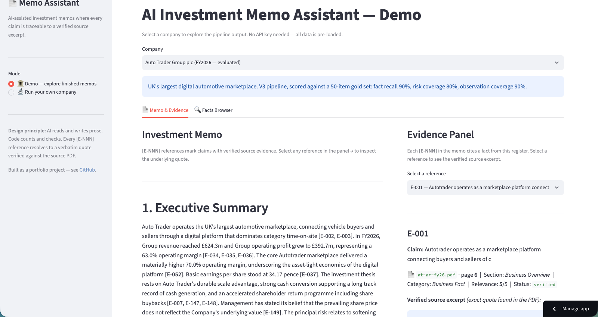
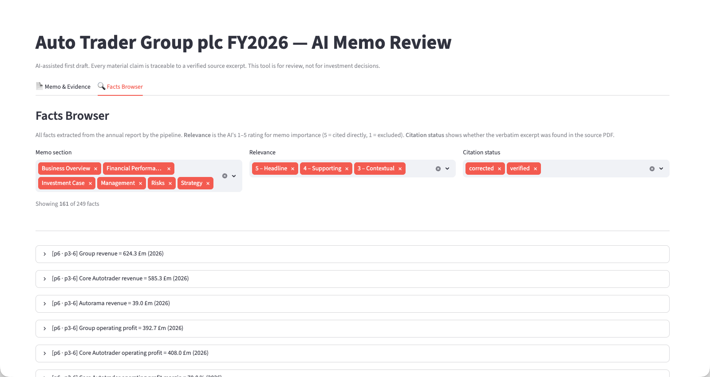

The problem
Analysts spend a lot of time reading hundreds of pages of company filings to answer the same handful of questions: what does the business do, how is it performing, what could go wrong, and what needs a closer look. A language model can draft that memo in seconds, but a raw model output is not usable for real work: claims aren't traceable to the source, numbers can be invented or miscalculated, and inference gets presented as fact.
This project fixes that. Every material claim in the memo cites a specific entry in an evidence register, and every entry links to a document, a page number, and the verbatim excerpt that was string-matched against the source PDF. It prepares an analyst's first pass. It never gives a buy or sell call, and it never presents inference as fact.


How it works
Seven stages in a straight line. Each one produces a JSON file that the next stage reads, so every step is inspectable. Only the extraction stage ever touches the raw PDF, and the memo-writing stage never sees the source documents at all: it works only from facts that have already been validated and classified.
- Ingest and extract. Pull text from the PDF, filter to the memo-relevant sections, and split into page batches.
- Fact extraction. A cheaper model reads each batch and pulls out structured facts with their page references.
- Validation. Code checks every fact's schema and string-matches each quote against the source text. Failures block the pipeline.
- Finance analysis. Code does all the arithmetic: growth rates, margins, ratios, and prior-year cross-checks.
- Classification. A stronger model rates each fact for relevance and tags it to a memo section.
- Memo generation. The model writes the narrative from the validated, classified facts only, with a citation on every claim.
The design principle
The split between the model and the code is deliberate. The model reads and interprets text, classifies facts, and writes prose. Code does everything that has to be exactly right: all arithmetic, schema validation of every model output, citation resolution (does the cited evidence entry actually exist?), and a number-match check between the memo and the source. The model never performs arithmetic, and code validates its citations and numbers after every AI stage.
Cost engineering
Token cost was a design constraint from the start, not an afterthought. The extraction stage uses a model about four times cheaper than the one used for judgement, pages are processed in batches to amortise the prompt overhead, and a section filter cuts roughly 70% of the pages before any model call. Runs are resumable, so a failure doesn't mean paying twice, and a pre-run estimator aborts if a job looks like it will cost more than a few dollars. A full run lands at roughly a dollar of API credit.
Tested, not just built
The output is measured, not assumed. Against a 50-item hand-built test set on Auto Trader, the pipeline hit 90% fact recall and 80% risk coverage, with 249 facts verified against source. I then ran it on Greggs and Games Workshop to check it held up on companies it wasn't tuned on. The demo runs from pre-committed output, so you can explore a finished memo and its evidence without an API key.